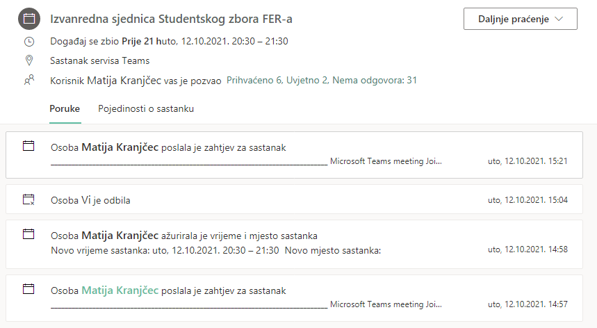

1. izvanredna sjednica SZ FER-a održala se u utorak, 12.10.2021., u 20:30. Prisutno je bilo sveukupno 35 aktivnih članova zbora (38 inicijalno, kasnije 39 izuzevši kolegicu Vasilj, te kolege Smetka, Konića i Marušića; kolega Kranjčec bi teoretski bio član SZ FER izbacivanjem kolega Konića i Marušića).
Čudna sjednica
Sjednicu je inicijalno sazvao kolega Matija Kranjčec koji ne samo da nije predsjednik SZ FER-a, nego nije ni član SZ FER-a u normalnim okolnostima. Ovo je učinio s 3 e-maila u kojem je priložio samo link na online sjednicu, ali ne i dnevni red, te zbog kompleksnosti teme, o čemu ćemo kasnije pričati, dodatne materijale.
Kako je to izgledalo možda ponajbolje ilustrira screenshot iz dolaznog pretinca kolege Šuflaja:

Zatim je sjednica sazvana regularnije, od strane kolegice Novak, koja je ujedno i predsjednica SZ FER-a:
Dnevni red sjednice je tada bio definirao kao
Ovo je bilo vrlo čudno, s obzirom da kolege koje su trebali biti smijenjeni u ovom trenutku su ne svojom krivicom imali zakašnjele upise - naime, iako je 5 ljudi imalo isti problem da im nisu provedeni upisi do kraja, kolega Konić i kolega Marušić imali su probleme oko neplaćene participacije. Problem kod kolege Marušića je bio jedan koji se često pojavljuje, a koji zapravo nije njegova krivica - sporost upisa na doktorskom studiju. Oko financija se ionako ne brine on jer se doktorski studij financira od strane fakulteta tj. države. Kod kolege Konića ispala je zavrzlama s priznavanjem ECTS-a s ERASMUS-a. Obje ove stavke mogle su biti priložene kao dodatna dokumentacija uz saziv sjednice (I zapravo su trebale), ali nisu, te konkretno obrazloženje za saziv prilaže kolega Konić, uz odgovore kolege Ranogajca. Prije nego što krenemo na stvari bitno je za napomenuti da kolega Konić i Marušić nisu pozvani na sjednicu, tj. da je ovo bio jedini način na koji su mogli iznijeti svoju stranu. Srećom, to nije bilo ni toliko potrebno. Ukratko, kolega Konić je priložio screenshot mailova s upravom u kojem se obrazložava da je ova sjednica sazvana bez uvida u cijelu situaciju, te da će kolege samo privremeno biti isključeni iz funkcija za koje su odabrani.
Dnevni red
Vjerojatno ćete shvatiti da se dnevni red znantno promijenio. Iako je to za očekivati s obzirom na to da se kolegi Koniću ispravno izračunala participacija i da se vjerojatno slučaj u globalu požurio, možda će neki od vas pomisliti da se onda sjednica nije trebala ni održati. Bilo kako bilo, ovo je dnevni red koji je predstavljen na samoj sjednici (a između ostalog je znatno izmijenjen, i kao takav nije priložen ostalim članovima):
- Prihvaćanje dnevnog reda
- Prihvaćanje zapisnika prethodne sjednice Studentskog zbora FER-a
- Objašnjenje razloga saziva izvanredne sjednice (Danko Marušić i Filip Konić nemaju status studenta i neispravno su izabrani na sve pozicije na koje su izabrani)
- Ostalo
Prije ulaženje u sam sadržaj sjednice, napomenut ću da se kao zapisničar odredio kolega Matija Kranjčec, bez glasanja, i koji nije član SZ FER-a inače, već bi izbacivanjem dvojice kolega bio s pravom. Inače je zapisničar implicitno bio kolega Konić, koji nije pozvan na sjednicu, zato je ovo naglašeno.
Prije ulaska u samo glasovanje za prvu točku, javlja se kolega Barbarić koji iznosi samu problematiku ove sjednice. Naime, kolegica Novak se žurila pojasniti zašto je ova sjednica sazvana. Prije samog glasovanja, mislim da je nekoliko nas imalo potrebu izraziti svoje mišljenje općenito o ovakvoj sjednici. Kolega Barbarić je komentirao kako je čudno sazvana i najviše, zapravo, kako je nevješto sazvana. Naime, činjenica je da problemi s upisom doktorskih studija nisu neka novost, i kako im je riješena školarina. Ovakvi zastoji nisu neočekivani. Navodi kako mu je zasmetalo kako se radi o administrativnoj pogrešci radi koje ne bi smjeli sudjelovati u radu.
Na to mu se ubacuje kolegica Novak koja samo želi reći da svi detalji u trenutku odluke nisu bili poznati, i kako se o tome neće raspravljati jer se ta situacija riješila.
Kolega Barbarić napominje da kad bismo izglasali ovaj dnevni red u koji bismo uvrstili reizbor ljudi koju su izgubili mjesta zapravo vršili suprotnu funkciju zbora, koja je štićenje prava studenata.
Na to kolegica Novak odgovara da se upravo zato s upravom dogovorila da to ostavimo za iduću sjednicu kad će ti studenti imati svoja prava, i da zato danas ne izglasavamo ništa (osim očito dnevnog reda i sl.).
Kolega Barbarić se s time slaže.
Kolegica Novak nas uvjerava da je prvotni poziv bio s obzirom na inicijalne informacije, i da bi mogli glasovati.
Izglasavanje dnevnog reda
Glasali za:
- Agneza Krajna
- Ana Šarčević
- Ana Šelek
- Andreja Jurasović
- Dina Petrak
- Filip Barišić
- Iva Zekić
- Iva-Maria Ivanković
- Ivana Kuliš
- Jakov Tutavac
- Lovro Široki
- Marta Dulibić
- Matija Kranjčec
- Tea Krišto
Glasali protiv:
- Branko Topalović
- Dominik Barbarić
- Dominik Jambrović
- Dominik Kisić
- Lovre Gusar
- Luka Greblo
- Magdalena Cvetko
- Marija Piliškić
- Marko Maršić
- Mihaela Bakšić
- Miljenko Šuflaj
- Patrik Dereh
- Vedran Radovanović
- Vladimir Radoš
Glasali suzdržani:
- Ivan Bartolec
- Ivan Grcić
- Katarina Jurič
- Matija Mrvčić
- Mia Bošnjak
- Tin Ferković
Dakle, 14 za, 14 protiv, 6 suzdržanih (iako je netočno bilo izabrano 15 protiv). Razlog za krivo brojanje je vjerojatno bilo brojanje u tandemu Kranjčec - Novak, gdje su se brojali samo protiv i suzdržani. Kolege su, primjerice, na početku zabunom brojali 1 glas protiv, iako su u tom trenu bila 2 glasa protiv - zanemareni glas kolege Topalovića je potom ispravno zabilježen. Nije potpuno jasno gdje se dogodila zabuna u prebrojavanju, ali ovo će svakako biti tema jedne od sljedećih sjednica kako bi rezultati i integritet glasanja bili neupitni.
Kolegica Novak potom, uz kolegu Barbarića, zaključuje da izglasavanje nije prošlo, dnevni red nije prihvaćen, te da se onda vidimo na sljedećoj sjednici, 29.10.2021.
Usprkos neuspjelom glasovanju, javlja se kolegica Vasilj, podsjećamo, iz publike, da razgovaramo o sutrašnjoj sjednici oko profesora Hlupića, otprilike citiram kolegicu Novak
da ne bi netko došao na Fakultetsko vijeće, ne zna što se događa. On je htio napredovati u više zvanje, ali i na Dekanskom kolegiju i njegov zavod svi su protiv, pa da onda ne bi zbog optužbi na njegov račun i sveg ostalog, da se ne bi netko slučajno od studenata zaletio i glasao za. Svatko glasa po vlastitom nahođenju.
Kolegica Vasilj ističe komentar kako na prvom satu profesor Hlupić zna napisati svoj broj na ploču i reći “Ovdje sam samo za studentice”, i komentira kako je na tu stvar osobno najosjetljivija. Druge, tvrdi, ne može potvrditi jer nije slušala predavanja kod njega.
Kolega Šuflaj pita može li se ovo zadnje dostaviti u pogledu dodatnih materijala kako bi se FV mogao upoznati sa slučajem (jer konkretan poziv na FV nije sadržavao te detalje).
Kolega Kranjčec odgovara da ne bi bilo dobro da se piše da je faks, tj. uprava rekla da se za nekog izglasa za ne, to se ne piše kao službeni dokument, to se ovako spomene.
Kolega Šuflaj spominje kako je to u redu, da ne moramo pisati o tome, već da ga zanima mogu li se te okolnosti oko profesora dostaviti kao materijali za proučiti prije sjednice (s obzirom na to da toga u službenim FV materijalima nema).
Kolegica Vasilj odgovara da se to ne može napisati zato što ne postoje službene optužbe, nitko nije podnio kaznenu prijavu. I radi toga se ne smije ništa pisati jer su to samo glasine, o tome se može samo razgovarati na sjednici.
Kolega Šuflaj tada postavlja pitanje zašto nam se onda ovo sve govori ako nije službeno i ako su glasine.
Kolegica Vasilj kreće odgovarati, ali joj kolegica Novak upada u riječ i obrazložava da je uprava zamolila da se to kaže. Kolegica Vasilj nastavlja obrazložavati da je to bila tema na dekanskom kolegiju, pa je dužnost kolegice Novak prenijeti što se desilo na dekanskom kolegiju.
Kolega Šuflaj posljednji put pita zašto onda to nije moguće zapisati formalno.
Na to kolegica Vasilj upada kolegi Kranjčecu u riječi, tvrdivši da izvanredna sjednica nema točke dnevnog reda gdje se predstavlja izvješće dekanskog kolegija.
Kolegica Novak pokušava završiti sjednicu, ali se javlja kolega Mrvčić s pitanjem tko će sutra (13.10.2021.) predstavljati studentske predstavnike u FV (s obzirom na to da situacija nije razrješena). Kolegica Novak objašnjava da će se predstavljati oni koji su izabrani, a oni koji nisu će se predstavljati drugi put.
MOD EDIT: prepravljena Izvanredna 3. sjednica u 1. izvanredna sjednica - format nazivlja, nema nekih službenih uputa kako bi se trebalo zvati; redovite i izvanredne sjednice neka onda imaju zasebne brojače.